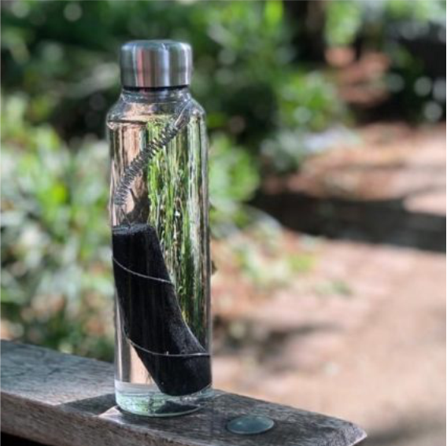

|  | BERIKUT ADALAH MANFAAT-MANFAAT YANG BISA DIDAPAT DARI PEMANFAATAN ARANG PADA FILTER AIR |
Secara umum fungsi arang dalam proses penyaringan air ialah sebagai saringan untuk proses penjernihan air. Yang mana, saringan arang ini biasanya dikenal dengan sebutan saringan pasir arang dengan tambahan satu buah lapisan arang. Lapisan arang tersebut sangat efektif untuk menghilangkan bau dan rasa yang ada pada air baku. Adapun arang yang digunakan biasanya berupa arang kayu atau arang batok kelapa. Bahkan untuk hasil yang lebih baik dan maksimal biasanya menggunakan arang aktif, sebagaimana direkomendasikan oleh salah satu badan PBB, yaitu UNICEF.
Secara lebih spesifiknya, fungsi arang pada proses penyaringan air ialah sebagai karbon aktif dalam melakukan penyaringan air untuk menjernihkan air tersebut. Hal ini dikarenakan dalam arang mengandung zat karbon aktif yang dapat bekerja dengan cara penyerapan atau absorpsi. Artinya, ketika ada bahan atau benda yang melalui karbon aktif tersebut, maka material yang terkandung di dalamnya akan diserap. Sedemikian sehingga tidak mengherankan apabila bahan ini (arang dengan kandungan karbon aktifnya) mampu mengambil beberapa kandungan tidak baik dari sebuah air yang tercemar, termasuk dalam proses penyaringan air untuk menjernihkannya sekaligus menghilangkan bau dari air tersebut.
1.) Fungsi Arang Kayu Dalam Penyaringan AirBagi anda yang memiliki sumur galian di rumah, pasti sering mengeluhkan tentang air yang kurang jernih atau berbau kurang sedap. sekaranganda tidak perlu repot lagi karena hanya dengan menggunakan arang kayu andasudah bisa menghilangkan bau yang kurang sedap sekaligus menjernihkan air dari sumur galian tersebut.
Untuk mendapatkan air bersih tersebut yang perlu dilakukan adalah mengikat beberapa potong arang kayu menggunakan tali dengan panjang secukupnya. Usahakan ikatan tersebut kuat agar arang kayu tak mudah lepas. Setelah cukup kuat, ceburkan ikatan arang tersebut ke dalam sumur galian dan biarkan di sana sampai beberapa lama. Apabila cara ini dilakukan secara periodik, niscaya kualitas air akan membaik, dalam hal warna mau pun bau. Setiap 2 atau 3 bulan sekali, andaharus mengganti arang tersebut dengan yang baru. Anda pun tidak perlu susah mencari arang karena arang kayu termasuk jenis arang yang banyak ditemukan, salah satunya di pasar tradisional.
2.) Fungsi Arang Aktif Sekam Padi Dalam Penjernihan AirSekam padi memiliki nilai ekonomi yang rendah dan pemanfaatannya masih terbatas. Salah satu produk yang dapat dikembangkan dari sekam padi dan memiliki nilai ekonomi tinggi adalah arang aktif. Arang aktif adalah senyawa karbon hasil pembakaran bahan alami yang mengandung karbon dan memiliki ruang pori. Pori tersebut berukuran sangat kecil dan dapat berbentuk seperti celah panjang. Pembuatan arang aktif dari sekam padi meliputi tahap pembakaran, aktivasi, karakterisasi, dan pengujian.
3.) Fungsi Arang Tempurung Kelapa Dalam Penjernihan AirTujuan penjernihan air ini adalah untuk menghilangkan pencemar yang ada dalam air atau mengurangi kadarnya agar air menjadi lebih layak untuk digunakan akhirnya. Teknik penjernihan air sendiri sangatlah penting bagi kehidupan manusia. Baik dengan teknik alami mau[un dengan teknik buatan.
Salah satu bahan yang dapat dimanfaatkan sebagai bahan penjernihan air adalah batok kelapa/tempurung kelapa. Tempurung kelapa yang di jadikan arang dapat ditingkatkan nilai ekonomisnya dengan menjadinkanya karbon aktif. Cara membuat karbon aktif dari tempurung kelapa relatif mudah. Karbon aktif berfungsi sebagai filter penjernih air. Tempurung kelapa adalah salah satu bahan karbon aktif yang kualitasnya cukup baik untuk di jadikan karbon aktif penjernih air.
Jadi, dalam proses penjernihan air, arang batok/tempurung kelapa ini berfungsi sebagai filter air dan juga membantu penyerapan air dengan memanfaatkan karbon aktif bekas pembakarannya.